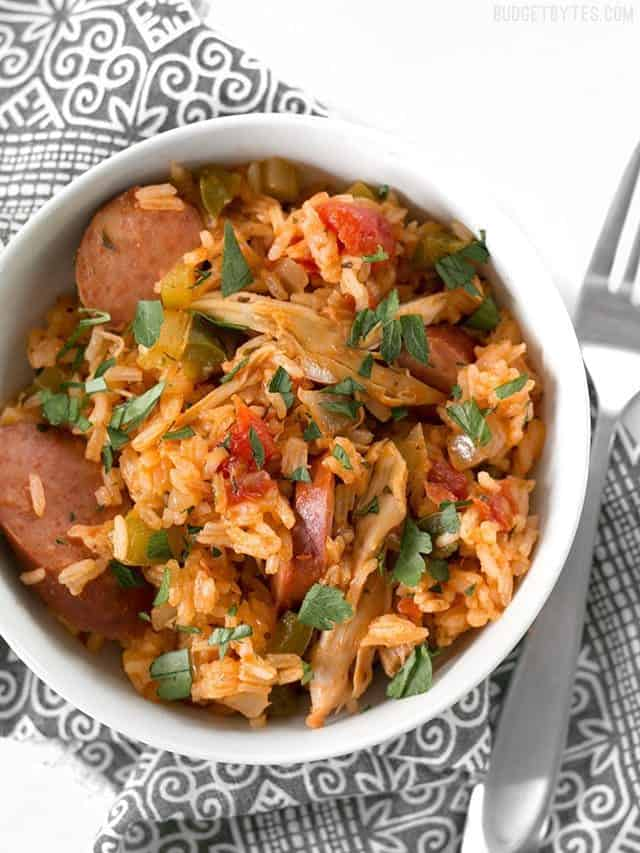

Slow Cooker Jambalaya

Description
A flavorful, budget-friendly Cajun meal that packs a lot of flavor in ingredients that are easy to get in bulk. This is a condensed version of a recipe that can be found on Budget Bytes.
Ingredients
- 12-16 oz smoked sausage
- 2 boneless, skinless chicken thighs
- 3 ribs celery
- 1 yellow onion
- 1 green bell pepper
- 2 cloves garlic
- 1/4 bunch fresh parsley
- 3 green onions
- 1/2 tablespoon smoked paprika
- 1 dried oregano
- 1 teaspoon dried thyme
- 1/2 teaspoon cayenne pepper
- Freshly cracked black pepper
- 2 15 oz cans diced tomatoes
- 2 cups chicken broth
- 2 ps uncooked long grain white rice
Steps
Prep Work
- Dice celery, onion, bell pepper
- Mince garlic
- Chop parsley
- Slice sausage into rounds
- Dice green onions
Directions
- Add celery, onion, bell pepper, and garlic to the bottom of a 5 quart or larger slow cooker
- Add sausage to the slow cooker, along with the (optional) chicken thighs, oregano, thyme, paprika, cayenne, and freshly cracked pepper
- Pour the diced tomatoes and all their juices over the meat and spices in the slow cooker
- Add the chicken broth and a handful of chopped fresh parsley. Stir briefly
Place the lid on the slow cooker, turn the heat on to high, and cook for four hours
- After four hours, the liquid in the slow cooker should be boiling. Carefully remove the chicken thighs, making sure to replace the lid quickly, shred the meat
- Add shredded check and uncooked rice to pot. Replace the lid and let it continue to cook on high for 20-25 minutes, or until the rice has absorbed most of the liquid
- Remove the lid, test the rice to make sure it's tender, then stir to fluff the ingredients. Sprinkle the sliced green onions over top, then serve